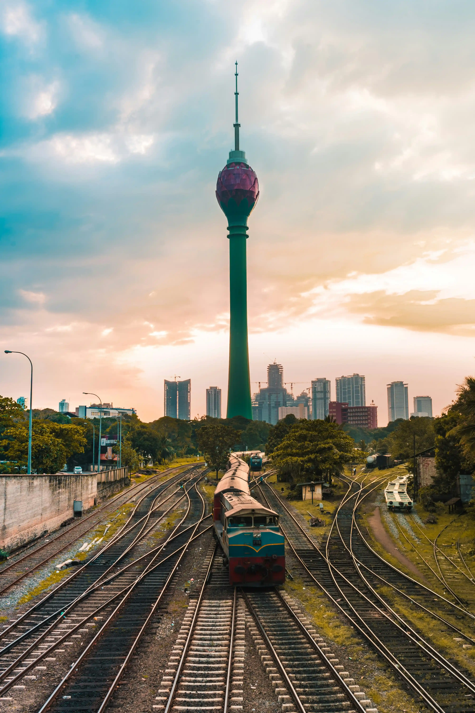
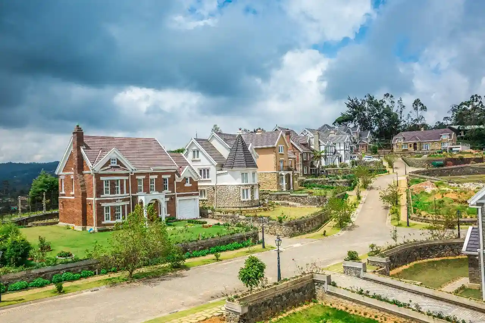
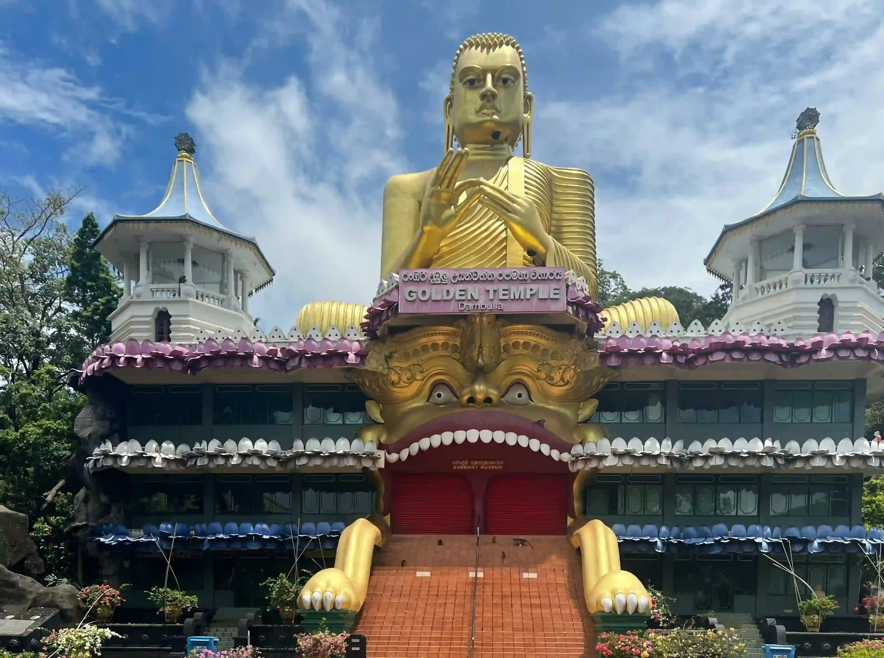
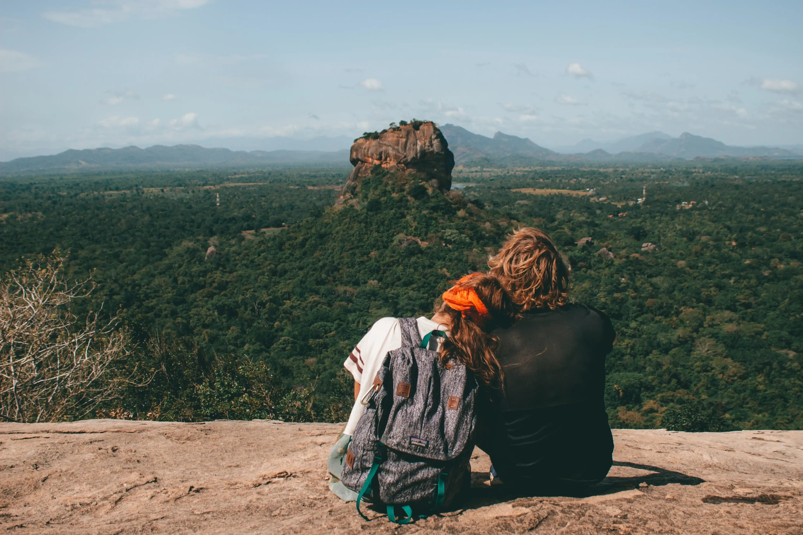

Panoramica del giro
Questo è un Tour Sri Lanka di sette giorni che inizia con una visita a Kandy, la capitale dello Sri Lanka. Prosegue con un viaggio panoramico in treno fino a Ella, attraversando le bellezze naturali dello Sri Lanka. Include un safari a Minneriya/Hurulu, una visita alla città antica di Anuradhapura, e si conclude con un relax sulla spiaggia a Nilaweli/Trincomalee. Con la nostra guida turistica, scoprirai la cultura e le tradizioni nello Sri Lanka, rendendo il tuo viaggio in Sri Lanka ancora più ricco. Questo tour ti permetterà di esplorare le più belle destinazioni turistiche dell'Asia.

Giorni 1
Trasferimento in albergo
Arrivo in Sri Lanka, pick up in aeroporto e trasferimento secondo l'orario di arrivo presso l'hotel più adatto a te,
Successivamente trasferimento immediato a Kandy.
In mattinata visiteremo il Tempio del Sacro Dente Religioso del Buddha. Dopodichè visiteremo tre templi: Lankathilaka, Gadaladeniya, Embekke. Avrete del tempo libero a disposizione per girare tra le vie della città, fare una passeggiata sul lago superiore e nella piazza del mercato. Successivamente, effettueremo un giro turistico della città di Kandy.
Pernottamento in hotel a Kandy

Giorni 2
Viaggio a Nuwaraeliya
Dopo la prima colazione in hotel, partenza per Nuwara Eliya. Andremo a visitare il tempio e la torre di Ambuluwa, e lungo il tragitto ci fermeremo ad ammirare la cascata di Ramboda. Visiteremo una fabbrica di tè dove vi verrà mostrato tutto il processo di lavorazione delle foglie della pianta del tè ed infine faremo una passeggiata tra le piantagioni. Visiteremo la cittadina di Nuwara Eliya (circa 27500 abitanti) che é situata nell'entroterra dell'isola ed è il capoluogo dell'omonimo distretto. È nota come "Piccola Inghilterra" per via delle sue coltivazioni e del tempo umido. Ritorno in hotel a Kandy.
Spostamento a Nanuoya dove viaggerete sul treno panoramico fino ad Ella.
Pernottamento in hotel ad Ella.

{kind=link}
{kind=link}
{kind=link}
{kind=link}
{kind=link}
{kind=link}

Giorni 3
visitare la cascata di Rawana
Al mattino possiamo visitare la cascata di Rawana. Nel pomeriggio trekking sul piccolo Adamo e il famoso ponte dei nove archi. In serata una lezione di cucina con una signora locale, dove potrete gustare una deliziosa cena tradizionale.
Pernottamento in hotel a Ella.

Giorni 4
partiremo verso Sigiriya
Dopo la prima colazione in hotel, partiremo verso Sigiriya. Sosta a Matale per visitare il Giardino delle Spezie ed il Tempio d’Oro in Dambulla. Nel pomeriggio faremo un safari nel parco Minneriya/ Hurulu per vedere gli elefanti in libertà. Lì potrai vedere un gran numero di raduni di elefanti.
Pernottamento in hotel a Sigiriya.
{kind=link}
{kind=link}

Giorni 5
scalata della fortezza sulla roccia di Sigiriya
Dopo la prima colazione in hotel, saliremo alla fortezza sulla roccia di Sigiriya, È uno dei siti più affascinanti del patrimonio mondiale dell’umanità. Su questa sommità sorgeva il palazzo del Re Kasspa da cui si domina bene la foresta circostante / In alternativa a Sigiriya, possiamo visitare anche la roccia di Pidurangala, che in precedenza era un complesso monastico. Pranzo in casa tradizionale. Faremo poi una passeggiata nel villaggio, dove potremo visitare una casa tradizionale, il loro stile di vita e le abitudini.
Nel pomeriggio, ci sarà poi la possibilità di effettuare un massaggio o trattamento di benessere in un centro ayurvedico.
Pernottamento in hotel a Sigiriya.
{kind=link}

Giorni 6
visitare prima capitale dello Sri Lanka
Dopo la prima colazione in hotel, partenza per Anuradhapura. Andremo a visitare la prima capitale dello Sri Lanka, una delle antiche capitali famosa per le sue rovine ben conservate dell'antica civiltà dello Sri Lanka. La città fa parte del patrimonio mondiale dell'UNESCO. Pranzo in ristorante.
Pernottamento in hotel a Anuradhapura.

Giorni 7
visita a Mihinthale
In mattinata faremo visita al tempio e alle rovine dell'ospedale antico di Mihintale e culla del buddismo.
Trasferimento e sistemazione in hotel a Nilaweli/ Trincomalee. Relax in spiaggia.
Relax al mare.
inclusi
- Caloroso benvenuto Caloroso benvenuto in aeroporto con una bellissima ghirlanda di orchidea.
- Trasferimenti Trasferimenti con la macchina privata con aria condizionata.
- Tasse Tasse governative e pedaggi stradali.
- alloggio Vitta alloggio per la guida.
non inclusi
- biglietti d'ingressi Tutti i biglietti d'ingressi per siti e templi, parchi nazionali, costo per jeep 4X4 safari , Boat safari Negombo, massaggio ayurvedico.
- Biglietti aerei